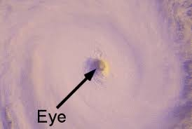
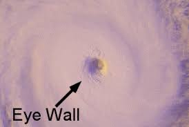
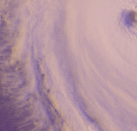

Ang bagyo ay isang napakalakas na sistema ng hangin na nagmumula sa mga karagatan, na may mababang presyon sa gitna. Ang mga bagyo ay kilala sa kanilang kakayahan na magdulot ng malalakas na hangin, matinding pag-ulan, at pagbaha, na maaaring magresulta sa malawakang pinsala sa mga komunidad.
Sa Pilipinas, ang bagyo ay binubuo ng tatlong pangunahing bahagi na nagdadala ng iba't ibang epekto:
Mata ng Bagyo: Ang kalmadong bahagi sa gitna, na maaaring umabot sa 20-50 km ang lapad. Dito, ang hangin ay halos walang galaw, at ang langit ay maaring maging maliwanag. Sa gitna ng napakalakas na bagyo, ito ang sandaling katahimikan na tumatagal bago muling bumalik ang mga malalakas na hangin at ulan.
Eyewall: Ang rehiyon na nakapalibot sa mata, kung saan matatagpuan ang pinakamalakas na hangin at pinakamatinding ulan. Ang eyewall ay ang pinaka-delikadong bahagi ng bagyo, na nagdudulot ng malalakas na pagbayo ng hangin na kayang magpatumba ng mga puno, poste, at iba pang estruktura.
Rainbands: Mga pabilog na ulap at ulan na kumakalat palabas mula sa eyewall. Ang rainbands ay nagdadala ng malakas na buhos ng ulan at hangin sa mas malalawak na lugar, na maaaring magdulot ng pagbaha at pagguho ng lupa. Ito ang nagiging sanhi ng mga biglaang pagbaha sa mga lugar na malayo sa mismong sentro ng bagyo.
Nabubuo ang bagyo kapag ang mainit na tubig sa karagatan ay nagpapainit sa hangin sa ibabaw nito. Ang mainit na hangin ay tumataas at nagiging sanhi ng pagbuo ng mababang presyon sa ibabaw ng dagat. Habang patuloy itong umaangat, ang hangin ay umiikot dahil sa Coriolis effect, na nagbibigay ng pag-ikot sa bagyo.
Ang pag-absorb ng enerhiya mula sa mainit na tubig ay nagpapatuloy, na nagpapalakas sa bagyo. Sa bawat pag-ikot at pagtaas ng enerhiya, ang bagyo ay nagiging mas malakas, na kayang umabot sa napakalaking lakas at malawakang pinsala. Sa average, ang Pilipinas ay nakakaranas ng 20 bagyo taun-taon, at tatlo o apat dito ay maaaring magdulot ng malawakang pinsala.
Ang mga bagyo ay tinutukoy at sinusubaybayan sa ilalim ng Philippine Area of Responsibility (PAR), na sumasaklaw sa isang tiyak na bahagi ng karagatang Pasipiko. Kapag pumasok sa PAR, ang mga bagyo ay binibigyan ng lokal na pangalan, at sinimulan ang malapitang pagbabantay at pagbigay babala sa publiko.
Hangin na umaabot sa 30-60 kph, inaasahan sa loob ng 36 oras.
Explanation: Signal No. 1 indicates a Tropical Depression. This is the lowest level of storm warning and signifies the potential for minor damage. Winds are expected to be between 30-60 kph, and the storm is expected to affect the area within 36 hours. It's a signal that residents should stay alert and prepare for possible changes in the weather.
Hangin na umaabot sa 61-120 kph, inaasahan sa loob ng 24 oras.
Explanation: Signal No. 2 signifies a Tropical Storm. It involves stronger winds ranging from 61-120 kph, with potential for significant impact. The storm is expected to reach the area within 24 hours. People should take precautions as the risk of damage to property and disruptions to daily life increases.
Hangin na umaabot sa 121-170 kph, inaasahan sa loob ng 18 oras.
Explanation: Signal No. 3 indicates a Severe Tropical Storm with winds reaching 121-170 kph. This level of storm poses a high risk of extensive damage and disruption. The storm is expected to hit within 18 hours, necessitating urgent preparations and possible evacuations.
Hangin na umaabot sa 171-220 kph, inaasahan sa loob ng 12 oras.
Explanation: Signal No. 4 denotes a Typhoon with winds of 171-220 kph. This is a severe storm capable of causing widespread and significant damage. The storm is anticipated to arrive within 12 hours, making it crucial for residents to follow all warnings and evacuate if necessary.
Hangin na higit sa 220 kph, inaasahan sa loob ng 12 oras.
Explanation: Signal No. 5 is for a Super Typhoon with winds exceeding 220 kph. This is the highest level of storm warning, indicating catastrophic conditions. The storm is expected to impact the area within 12 hours, and it is essential for everyone to adhere strictly to evacuation orders and safety measures to protect lives and property.
Bago dumating ang bagyo, suriin ang iyong tahanan para sa mga posibleng sira, tulad ng kisame at bintana. Siguraduhing kumpleto ang emergency go-bag na naglalaman ng mga pangunahing pangangailangan tulad ng tubig, pagkain, at mga gamot. Mag-update sa mga typhoon signal warnings at sundin ang mga tagubilin mula sa lokal na awtoridad. Maglaan ng oras para sa mga kinakailangang pag-iingat upang tiyakin ang kaligtasan ng pamilya.
Manatili sa loob ng bahay upang iwasan ang panganib mula sa malakas na hangin at pagbaha. Iwasan ang paglalabas maliban kung kinakailangan. Kung kailangan mong lumabas, tiyaking may sapat na proteksyon laban sa hangin at ulan. Mag-ingat sa mga lugar na binaha at huwag maglakad sa mga kalsadang maaaring may dalang kuryente. Siguraduhing nailipat ang mga mahahalagang bagay sa mataas na lugar upang maiwasan ang pinsala.
Pagkatapos ng bagyo, magsagawa ng agarang pagsusuri sa pinsala sa iyong tahanan. Suriin ang mga lugar na maaaring may sira o panganib tulad ng mga nasirang kable at tubo. Simulan ang paglilinis at pag-aayos ng mga nasirang bagay. Siguraduhing malinis ang tubig at pagkain bago ito gamitin. Mag-ulat ng mga pinsala sa mga awtoridad at makinig sa kanilang mga tagubilin para sa mga susunod na hakbang. Maghanda para sa susunod na sakuna sa pamamagitan ng pagkakaroon ng emergency supplies.
Alamin ang higit pang detalye tungkol sa mga bagyo at ang kanilang epekto. Magbasa ng mga artikulo at manood ng mga video upang mapalalim ang iyong pang-unawa.
Gumagamit ang mga meteorologist ng Doppler radar, satellite, weather buoys, reconnaissance plane, at ground stations para subaybayan at hulaan ang mga bagyo, na nagbibigay ng tumpak na pagtataya at maagang babala. Ang mga bagyo sa Pilipinas ay pinapangalanan ng PAGASA mula sa isang itinakdang listahan bawat taon, at kapag nagdulot ng matinding pinsala, ang pangalan nito ay nireretiro at pinapalitan ng bago para sa mga susunod na taon.
Ang storm surge ay pagtaas ng antas ng dagat na dulot ng malalakas na hangin sa panahon ng bagyo, na nagdudulot ng pagbaha at pinsala sa baybayin.
Date: Nobyembre 2020
Signal No.: Signal No. 4
Details: Bagyong Goni, kilala rin bilang Typhoon Goni sa internasyonal, ay isa sa mga pinakamalakas na bagyo na tumama sa Pilipinas noong mga nakaraang taon. Pumasok ito sa Bicol region na may pinakamataas na hangin na higit sa 300 km/h (185 mph). Nagdulot ito ng malaking pinsala, partikular sa Bicol region at bahagi ng Luzon, na nagresulta sa malawakang pagbaha, pagguho ng lupa, at pagkasira ng imprastruktura. Ito ay ikinategorya bilang isang Category 5 super typhoon bago mag-landfall.
Date: Setyembre 2018
Signal No.: Signal No. 4
Details: Bagyong Mangkhut, kilala sa internasyonal bilang Typhoon Mangkhut, ang pinakamalakas na bagyo ng 2018. Tumama ito sa hilagang bahagi ng Pilipinas, kabilang ang Luzon, na may mapaminsalang puwersa. Ang Mangkhut ay may hangin na higit sa 250 km/h (155 mph) at nagdala ng malalakas na ulan na nagdulot ng malawakang pagbaha at pagguho ng lupa. Nagresulta ito sa malawakang pinsala sa mga lugar ng agrikultura at urban na sentro, na apektado ang milyun-milyong tao.
Date: Nobyembre 2013
Signal No.: Signal No. 4
Details: Bagyong Yolanda, na kilala sa internasyonal bilang Typhoon Haiyan, ay isa sa pinakamalakas na bagyo na naitalang dumaan. Tumama ito sa Pilipinas na may hangin na umabot sa 315 km/h (195 mph). Ang Yolanda ay nagdulot ng napakalaking pinsala sa buong rehiyon ng Visayas, partikular sa Tacloban City at mga karatig lugar. Nagresulta ito sa isang malaking krisis sa humanitarian, na may libu-libong nasawi, malawakang pagkasira ng mga tahanan, at matinding pagkaabala sa imprastruktura at serbisyo. Isa ito sa mga pinaka-nakamamatay at pinaka-mapaminsalang bagyo sa kasaysayan.
Suportahan ang mga ahensya at organisasyon na tumutulong sa mga naapektuhan ng bagyo. Narito ang mga paraan kung paano ka makakatulong.
Makakuha ng mabilis na impormasyon at suporta sa pamamagitan ng mga hotline na ibinibigay ng gobyerno at NGOs.
Mga mapagkukunan para sa karagdagang kaalaman at pag-aaral. Tumuklas ng mga libro, artikulo, at iba pang mga resources.
Alam mo ba na ang Pilipinas ay tinatamaan ng humigit-kumulang 20 bagyo bawat taon, kung saan 8-9 ang nagla-landfall?
Alam mo ba na ang mga bagyo sa Pilipinas ay may sariling lokal na pangalan, tulad ng "Yolanda" para sa Typhoon Haiyan?
Alam mo ba na sinusubaybayan ng PAGASA ang mga bagyo mula pa noong 1972, isa sa mga pinakamatandang sistema sa rehiyon?
Alam mo ba na ang salitang "bagyo" ay nagmula sa Baguio, matapos bumuhos ang 46 pulgada ng ulan sa loob lamang ng 24 na oras noong 1911?
Alam mo ba na ang Bagyong Yolanda ang pinakamalakas na bagyong naitala sa kasaysayan, at sa kabila ng matinding pinsalang dulot nito, ipinakita ng mga Pilipino ang kanilang hindi matitinag na katatagan?
Lider. Ang nagdirek sa mga kagrupo sa mga gawain. Ang taga-disenyo ng brochure at website.
Taga-sulat ng fun facts at karagdagang kaalaman.
Taga-sulat ng mga kailangang gawin bago dumating ang bagyo. Isa sa mga modelo sa ilang retrato.
Taga-sulat ng mga pangunahing impormasyon tungkol sa bagyo. Isa sa mga modelo sa ilang retrato
Pangalawang taga-sulat ng mga karagdagang impormasyon tulad ng mga fun facts, hotlines at charity.
Taga-sulat ng mga kailangang gawin sa oras ng bagyo. Isa sa mga modelo sa ilang retrato.
Taga-sulat ng mga kailangang gawin pagkatapos ng bagyo.